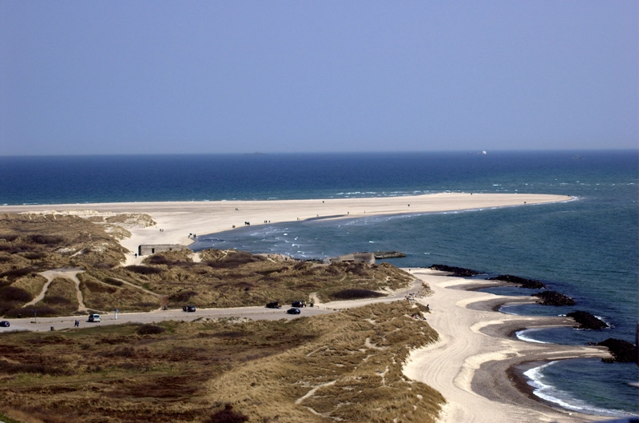

Artikel
Dansk blockad av Skagerrak: ska Sverige svara?
Tidigt under söndagsmorgonen rapporterade Försvarsmakten att Danmark inlett en olaglig blockad av hela Skagerrak, som sträcker sig från Hirtshals på danska västkusten till Lillesand i Norge, efter att flera svenska fraktfartyg blivit nekade passage. När marinens båtar nådde fram möttes de av “obegripliga ljud” på radion som misstänks vara ett danskt försök till talat språk. Eftersom att det inte gick att förhandla på plats var marinen tvungen att backa, men har enligt en anonym källa till Löken instruktioner om att “ladda skarpt”.
En blockad anses internationellt vara en krigshandling, men när nu danskarna gör det från till synes ingenstans är det tveksamt hur de drabbade länderna ska svara. All sjötrafik som når Sverige, Finland, Tyskland, Polen och baltstaterna går genom sundet, och en fullständig blockad beräknas kosta uppåt 70 miljarder kronor per dag. Sveriges regering och dess danska motpart har redan talats vid över telefon, men även de förhandlingarna fallerade på grund av språkbarriären. Sveriges utrikesminister Maria Malmer Stenergard (M) var närvarande: “De insisterade på att vi kunde tala våra egna språk istället för engelska. När vi för femte gången förklarade att vi inte har någon aning om vad de säger hördes ett dovt grymtande och sedan lade de på”. Som situationen ser ut i nuläget är det mörkt. Under pressträffen som hölls efter försöket till förhandlingar vägrade ministrarna berätta ifall ett väpnat svar var uteslutet.